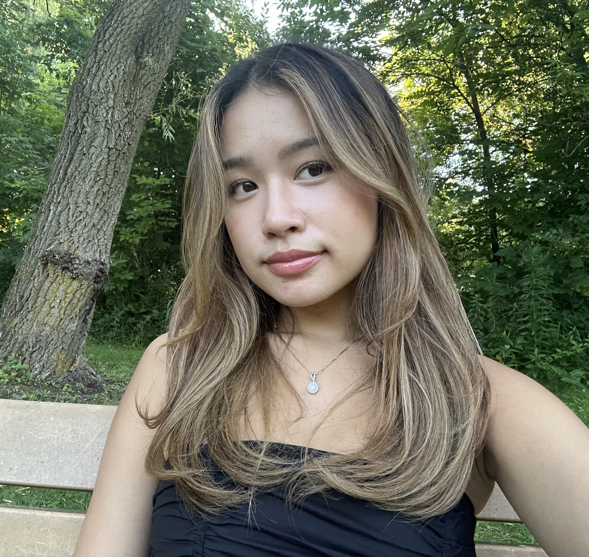

Let's Talk About Hair!
Have any questions about hair related things? This blog will cover almost anything you can think of.
Ranging from the basics of hair theory, to daily tools I've used and recommend. My blog is a safe space to
learn things that aren't typically free education.
Here's why: As a mostly self taught hairstylist, I found myself frustrated at how hard it was to learn
the proper things, where to get started, or what I need to know. Throughout learning hair more seriously
starting in 2020, I've been able to gather some knowledge and experience to share to you. I want to be able
to help and make an impact on someone who was at the same spot as I was when I started to dabble into the
hair industry.

I'm currently studying Computer Science at the University of Guelph. But I have always had a passion for
anything beauty related. Since I was 4, I've been braiding hair and started taking hairstyling more seriously
when the global pandemic hit. With a lot of spare time, I went into a deep dive about hair theory and techniques.
I specialize in hairstyling and hair colouring, specifically mastering the balayage technique. I've also taken
cosmetology courses to ensure that I adhere to safe practices and built a strong foundation in hair theory.
I take clients a few times within the year typically doing balayages, or hairstyles if it's a special occasion.
During my spare time, I enjoy reading, pilates, shopping, and of course coding!
I'm currently mastering colour formulations since there's a complexity to the colour theory, chemistry, colour lines,
and reliability. I typically do blondes, brunettes, brondes, and auburns, so fashion colours and reds are an unfamiliar
territory for me. Colour formulations also come with years of experience, with only 5 years of colouring experience and
mainly as a hobby, I don't gain as much experimental practice. If there are readers with some advice or input, please
reach out and let me know! In the future, I want to pick up barbering, women's cuts, and extension installation.
References
BabylissPro. (n.d.). Curling iron with a grey barrel and blue handle [Online Image]. In Amazon. https://a.co/d/59ibh2RDyson. (n.d.).
Dyson hair dryer grey with pink accent [Online Image]. In Sephora. https://www.sephora.com/ca/en/product/dyson-dyson-supersonic-trade-hair-dryer-P475931?country_switch=ca&lang=en&skuId=2522258&om_mmc=ppc-GG_20543817093___2522258__9001010_c&gad_source=1&gclid=Cj0KCQjwhr6_BhD4ARIsAH1YdjB_8W5Qti2i1JGLhjIeV6b8qA7jDvYMlQEVhLkaH3J-leQq2dm3GnMaArXgEALw_wcB&gclsrc=aw.ds
Hot Tools. (n.d.). Black and gold curling iron [Online Image]. In Amazon. https://a.co/d/3UFPSol
Milady. (2011). Milady Standard Cosmetology 2012, Metric Edition Book Cover. In Amazon. https://www.amazon.ca/Milady-Standard-Cosmetology-2012-Metric/dp/1111645426
Milady. (2012a). Hair composition diagram [Textbook Image]. In Milady Standard Cosmetology.
Milady. (2012b). Hair levels and contributing pigment diagram [Textbook Image]. In Milady Standard Cosmetology.
Milady. (2012c). Hair structure diagram [Textbook Image]. In Milady Standard Cosmetology. Milady, Frangie, C. M., Botero, A. R., Henessey, C., Lees, Dr. M., Sanford, B., Shipman, F., & Wurdinger, V. (2012). Milady standard cosmetology. (J. Halal, R. Ferman, J. McConnell, J. McCormick, V. Peters, & D. Schoon, Eds.; 12th ed.). Cengage Learning.
Vuong, B. (2020). Updo hairstyle with braids on mannequin head [Photograph].
Vuong, B. (2022, January 16). YouTube. Www.youtube.com. https://www.youtube.com/embed/jr0hxos9C8k?si=VSLjQBG7C4sqpxaC
Vuong, B. (2023a). Blonde balayage on model [Photograph].
Vuong, B. (2023b). Brunette balayage with loose curls on model [Photograph].
Vuong, B. (2024a). Author image [Photograph].
Vuong, B. (2024b). Blowout on brunutte hair [Photograph].
Vuong, B. (2024c). Bronde Balayage [Photograph].
Vuong, B. (2025). The hair oracle logo header banner [Photograph].